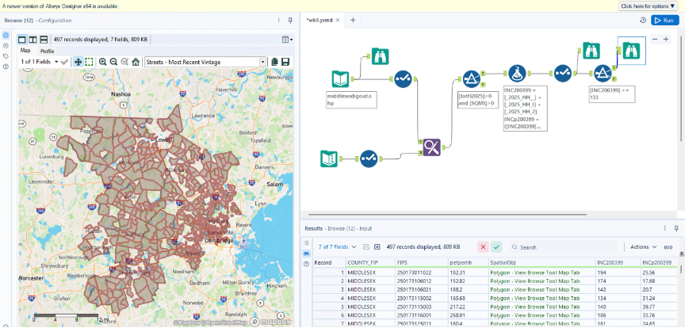
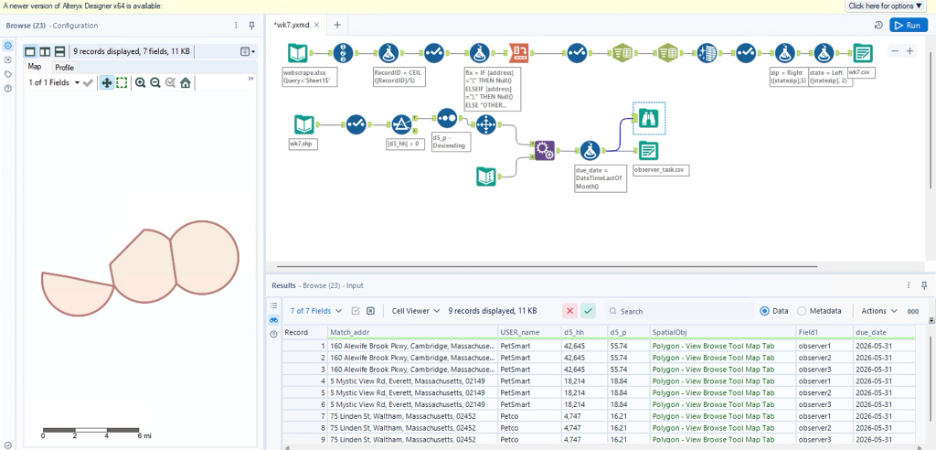
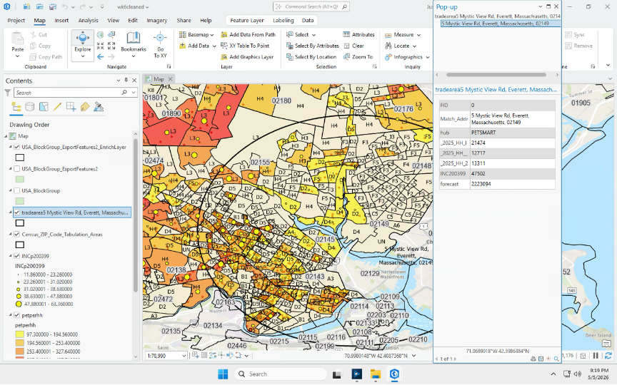
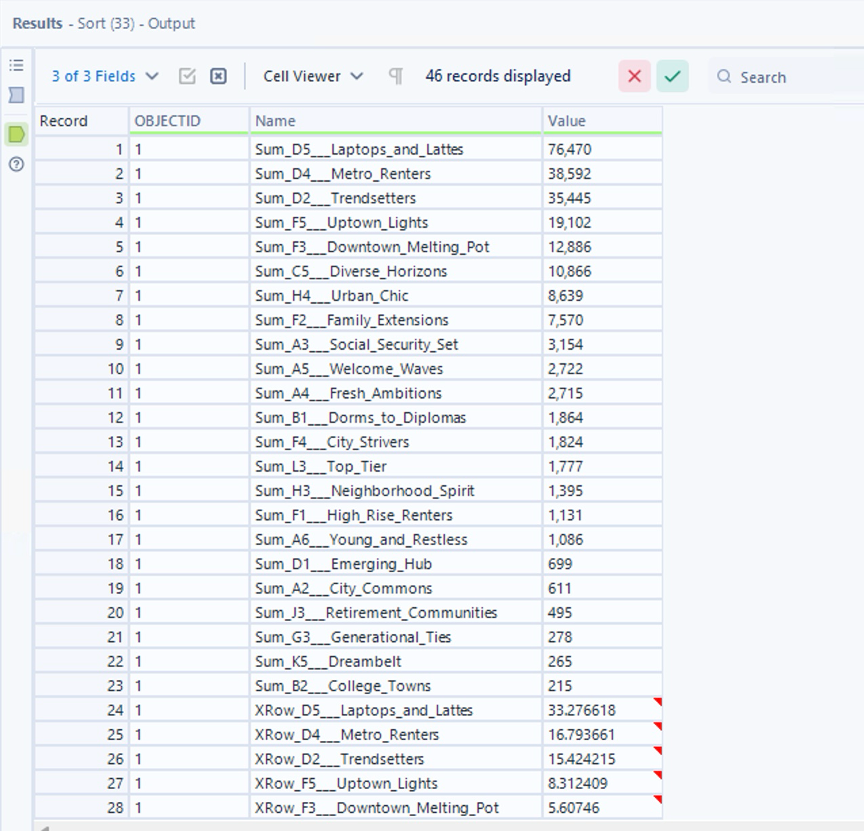

Trade Area Analytics Case Study
Built a micromarketing workflow to identify high-value customers and priority trade areas for a premium mobile pet grooming and veterinary service.
Business Problem
A mobile pet grooming business does not succeed by targeting every pet owner equally. The strongest customers are more likely to value convenience, premium care, recurring service, and time-saving at-home appointments.
The purpose of this project was to use geographic, demographic, spending, and lifestyle data to identify where those high-value customers are concentrated and which trade areas should be prioritized for marketing and service coverage.
Market Screening Workflow

Alteryx was used to combine demographic, income, and pet spending data to evaluate county-level market opportunities and identify Middlesex County as the strongest target market.
Project Scope
Started by narrowing the target market using sociodemographic and spending variables related to income and pet service demand.
Compared counties using high-income household concentration and pet services spending to identify the strongest geographic market.
Used ArcGIS to create geographic trade areas around potential service hubs and evaluate their market potential.
Used Tapestry lifestyle segmentation to understand the customer groups most aligned with premium mobile pet grooming.
Data Foundation
High-income household counts and percentages were used to identify areas with stronger ability to pay for premium recurring services.
Average pet services spending was used as a demand signal for grooming, veterinary, and pet-care related services.
ArcGIS was used to analyze ZIP codes, counties, block groups, and trade areas so the recommendation was tied to real service coverage.
Lifestyle segmentation was used to identify customer groups with premium service behavior, urban convenience needs, and stronger spending potential.
ArcGIS Workflow
ArcGIS was used to enrich geographic areas with demographic, spending, and lifestyle data. The workflow moved from larger geographies into more precise trade areas, allowing the analysis to become increasingly targeted.
I used ArcGIS to evaluate ZIP-level and county-level opportunity, create block group layers, enrich those areas with demographic and spending variables, and map customer lifestyle segments. This helped translate market data into a location-based service strategy.
Trade Area Development

ArcGIS and Alteryx were combined to create trade areas around potential service hubs and evaluate geographic accessibility, customer concentration, and market potential for a mobile pet grooming business.
Alteryx Workflow
Imported enriched ArcGIS outputs into Alteryx, cleaned fields, removed invalid observations, and prepared the data for aggregation and ranking.
Used the Summarize tool to group ZIP-level data by county and calculate total high-income households, average high-income percentage, and average pet spending.
Compared market areas based on customer quality, spending potential, geographic fit, and service opportunity.
Transposed and ranked Tapestry lifestyle segment data to identify which customer groups dominated the strongest trade area.
Market Selection
High-income households identified in Middlesex County.
Average percentage of high-income households.
Average pet services spending score.
ZIP codes, giving flexibility to identify more specific trade areas.
Middlesex County was selected because it combined market size, income concentration, and pet spending potential. This made it a strong county-level target before narrowing into specific trade areas and lifestyle segments.
Trade Area Evaluation

ArcGIS mapping revealed how customer demand, household income, and pet spending varied across the trade area, helping identify neighborhoods most aligned with premium mobile pet grooming services.
Lifestyle Segmentation
D5 Laptops and Lattes was the dominant lifestyle segment in the successful trade area.
D4 Metro Renters represented another major urban customer segment.
D2 Trendsetters showed strong alignment with premium lifestyle behavior.
F5 Uptown Lights added another meaningful urban lifestyle segment.
Key Insight
The strongest trade area was not selected only because it had high-income households. It was strong because the dominant lifestyle segments aligned with the business model: younger, highly educated, urban professionals with strong purchasing power and convenience-oriented lifestyles.
The D5 Laptops and Lattes segment was especially important because these households tend to live in dense metropolitan areas, have high incomes and home values, and spend on premium services. That profile fits a mobile pet grooming and veterinary service because the value proposition is convenience, quality, and time savings.
Customer Segmentation Results

Tapestry segmentation identified Laptops and Lattes, Metro Renters, and Trendsetters as the dominant customer groups within the recommended trade area. These segments align closely with convenience-driven, higher-income consumers who are more likely to purchase recurring premium pet care services.
Business Recommendation
Focus on dense, high-income urban neighborhoods where customers are more likely to pay for convenience and recurring premium pet care.
Use segments like Laptops and Lattes, Metro Renters, and Trendsetters to guide messaging, promotional strategy, and local outreach.
Prioritize areas with concentrated demand so the mobile service model can reduce drive time and increase appointment density.
Reuse the ArcGIS and Alteryx workflow to evaluate new ZIP codes, new hubs, and future expansion markets.
Business Value
This project turned micromarketing data into a practical growth strategy. Instead of guessing where to advertise or where to offer service coverage, the workflow created a data-driven way to identify high-value neighborhoods, understand customer lifestyles, and prioritize trade areas.
For a mobile service business, this matters because marketing and routing decisions directly affect profitability. The best trade area is not just where many people live; it is where the right customers live close enough together to support repeat bookings and efficient service delivery.
Tools Used